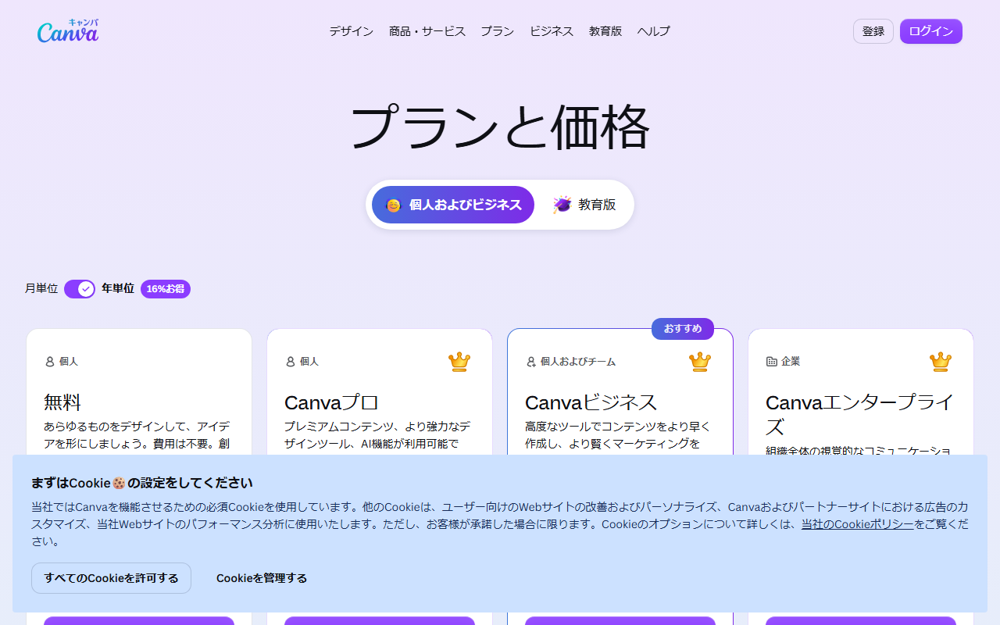
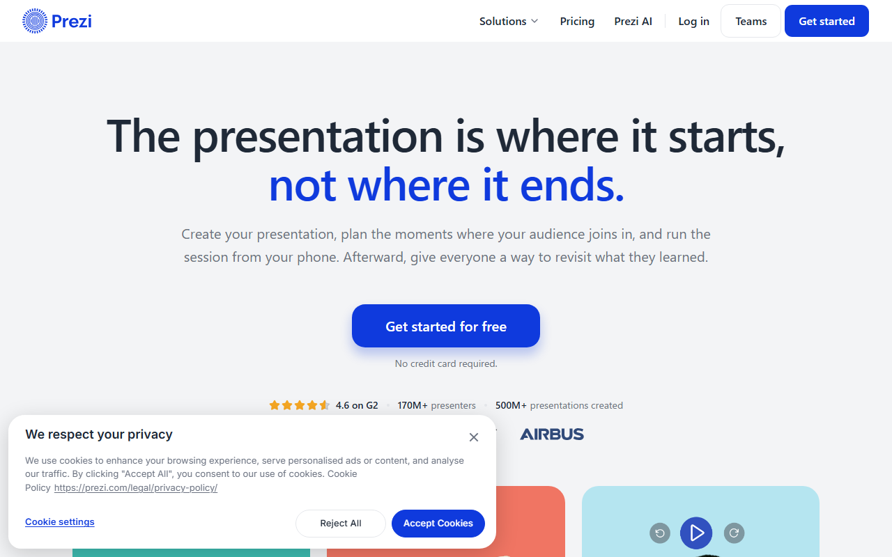

プレゼン資料作成AIツールおすすめ4選｜無料枠・日本語・PPTX出力を比較
AIプレゼン資料作成ツールは、営業資料や社内報告を作るサービスです。構成や本文から、デザインまでが対象。無料枠があっても、日本語UIやPPTX出力の条件は製品ごとに違います。
Gammaを含む4製品を取り上げます。無料枠と日本語対応に加え、PPTX出力や向いている場面も比べます。
プレゼン資料作成AIおすすめ4選の早見
- Gamma：無料・400クレジット／日本語UI
- Canva：無料・AIは月最大20回／日本語UI
- Beautiful.ai：Basicは合計100枚／英語UI
- Prezi：無料・5件まで／日本語UI
迷ったらGammaがおすすめです。カード不要のFreeで日本語UIを使え、PPTXにも書き出せます。
無料・有料プランの金額と、月払い・年払いの違いが分かります。
AIプレゼン資料作成ツールの選び方
最初に見るのは、日本語対応とPPTXでの再編集です。 次は、無料枠からの書き出しとデザインの直しやすさ。「AI搭載」という言葉だけでは、この4点は分かりません。
登録前は、次の順番で確かめます。
- 日本語の文章を生成できるか。操作画面と問い合わせ窓口も日本語か
- PPTXで書き出せるか。PowerPointで文字や図形を直せるか
- 無料枠で生成だけでなく、ダウンロードまで完了できるか
- AIが全体を作る方式か、既存デザインの編集を助ける方式か
日本語生成・日本語UI・日本語サポートを分ける
「日本語対応」は、生成される文章だけの話ではありません。操作画面と問い合わせ窓口の言語も別々に見ます。
Gammaは公式サイトに加え、アプリUIとヘルプセンターも日本語対応です。Canvaにも日本語UIと日本向け料金ページがあります。一方、Beautiful.aiのUIは英語。AIによる翻訳機能は使えます。Preziはオンラインエディターを日本語に切り替えられ、ヘルプセンターも日本語です。
複数人で使うなら、生成される資料の品質だけでは決められません。設定や請求管理を日本語で進められることも条件の一つ。英語UIを選ぶなら、社内向けの操作手順も用意します。
PPTXで書き出した後に編集できるか確認する
「PPTX対応」でも、PowerPoint上で同じ見た目になるとは限りません。GammaはFreeでもPPTXに書き出せます。Canvaも無料プランから対応。ただしCanvaでは、変換時にフォントやレイアウトがずれる場合があります。アニメーションが再生されない場合も。編集可能なPowerPointをBeautiful.aiから出力できるのは、Pro、Team、Enterpriseです。
納品形式がPPTXなら、まず1〜2枚を書き出します。実際に使うPowerPointで文字と図形を直せるか、動きが残るかを試します。
無料で作れる範囲と持ち出せる範囲を分ける
無料枠では、作れる量とPPTX出力の条件を分けて見ます。Gammaは登録時400クレジットで、毎月の補充はありません。Canva Freeの共通AI枠は最大20回。Prezi BasicにはAIクレジット500が付きます。14日間トライアルから始まるBeautiful.aiは、解約後に合計100スライドまでのBasicに移ります。
AIが全体を作る型か、デザイン編集型かを選ぶ
Gammaは、構成から見た目までまとめて作ります。Canvaは写真やテンプレートを同じ画面で編集するツール。配置を自動で整えるBeautiful.aiには、300以上のSmart Slideがあります。Preziの特徴は、ズームを使って全体から詳細へ話を進める演出。構成・素材・配置・演出のうち、どこをAIに任せたいかで選びます。
プレゼン資料作成AIツールおすすめ4選
4製品では、AIに任せられる作業が違います。 順位は付けていません。構成はGamma、素材の編集はCanva。配置はBeautiful.ai、演出はPreziが目安です。
Gamma｜日本語で構成からPPTX出力まで始めたい人向け

日本語の料金ページには、0円のFreeと3つの有料プランが並んでいます。
Freeはクレジットカード不要で、登録時に400クレジットを受け取れます。毎月の補充はなし。1回のプロンプトで作れるスライドは最大10枚です。
無料のままPDF・PPTX・PNG・Googleスライドへ書き出せます。Free出力にはGammaのロゴが入り、有料プランへ移ると削除できます。
公式サイトとアプリUIは日本語対応で、日本語版ヘルプセンターもあります。ただし、問い合わせ窓口の日本語対応は別の条件。チームで使うなら、操作画面と問い合わせ窓口を分けて見ます。
無料枠では、実際に使う資料に近い10枚以内のファイルを作ります。そのファイルで、PPTX変換後の修正量とロゴの扱いを確かめます。
Canva｜テンプレートや素材もまとめて編集したい人向け

日本語の料金ページには、無料プランのほか、CanvaプロやCanvaビジネスが並びます。
Canvaでは、AI生成とテンプレート、写真を同じ画面で扱えます。動画や音声の素材も使えます。無料プランのクラウドストレージは5GB。160万点以上のテンプレートと470万点以上の素材も案内されています。
Canva Freeの共通AI枠は、月に最大20回。枠は毎月リセットされます。複雑な処理では、20回未満になる場合も。回数だけで決めず、素材を加えて仕上げるところまで試します。
料金ページは円建てで、UIも日本語です。PPTXへの書き出しは、Freeを含む全プランが対象。PowerPointに変換すると、フォントや配置がずれる場合があります。アニメーションが再生されないこともあるため、早めに一度書き出しておきます。
無料プランで、使いたい素材が無料対象かを見ます。PowerPointへ移した後の再編集も試します。
Beautiful.ai｜レイアウトの自動調整を重視する人向け

公式トップページは英語表示で、無料トライアルの入口が目立つ位置にあります。
300以上のSmart Slideを備え、内容に合わせて配置を整えます。有料プランならAI生成は無制限。PowerPointも取り込めます。編集可能なPowerPointへ書き出せるのは、Pro、Team、Enterpriseです。
14日間のProトライアルは、カード登録が必須。期間内に解約しなければ、自動で課金されます。解約後は、合計100スライドまでのBasicへ移行。編集可能なPPTX出力を試すなら、トライアルの終了日を先に控えておきます。
公式サイトと操作画面は英語ですが、AIによる翻訳機能があります。編集から契約管理まで、英語UIで進められるかも試します。
14日間のProトライアルで、Smart Slideのレイアウトを試せます。PPTXに書き出し、PowerPointで直すところまで試します。
Prezi｜ズーム演出のあるプレゼンを作りたい人向け

公式トップページは英語表示で、カード不要の無料開始ボタンがあります。
Preziは全体像から詳細へズームし、情報のつながりを見せます。一般的な社内報告より、視線の動きを演出したい講演や製品紹介に向いています。
無料のBasicにはAIクレジット500が付き、作成できるプレゼンは最大5件です。有料プランには14日間の無料トライアルがあり、終了後は自動で課金されます。
Basicと有料トライアルは、登録の入口が別。オンラインエディターを含むUIは、日本語に切り替えられます。ヘルプセンターも日本語対応ですが、問い合わせ言語は案内されていません。
PPTXへの書き出しにも対応。ズーム演出は引き継がれず、フレームごとの静的なPowerPointスライドに変わります。利用できるプランは案内ページに明記されていないため、PPTX納品が必須なら契約前に確かめます。
Basicの5件の上限内で、発表の流れを作れます。有料トライアルへ進む前に、自動課金の時期も把握しておきます。
無料で作れる範囲と有料に切り替える目安
継続して無料で使えるのは、Gamma、Canva、Preziです。 一方、Beautiful.aiは14日間トライアルから始まり、解約後はBasicへ移ります。無料プランと期間限定トライアルは別物。
Gammaは400クレジットでPPTX出力まで試す
400クレジットで、実務に近い10枚以内の資料を作ります。使い切る前に、PPTX出力とロゴの扱いまで試しておきます。
CanvaはAI枠の残り回数を別に管理する
Canva Freeの共通AI枠は最大20回で、毎月リセットされます。複雑な処理では、20回未満になる場合も。通常のデザイン編集やPPTX出力とは分けて、AI枠の残り回数を管理します。
Beautiful.aiはBasicと14日間Proトライアルの条件が異なる
編集可能なPPTXを試せるのは、14日間のProトライアルです。トライアルを解約すると、合計100スライドまでのBasic。登録したカードに自動課金される時期は、先に控えておきます。
PreziはBasicの作成数とトライアル後の自動課金に注意する
Prezi Basicは月額無料ですが、作れるプレゼンは最大5件です。有料プランの14日間トライアルは、終了後に自動課金。その後は契約周期に合わせて更新されます。
海外SaaSの経理処理や税区分は契約主体によって扱いが変わるため、必要に応じて税理士に確認してください。
PPTXに書き出した後の再編集で確認すること
PPTXに対応していても、PowerPointで思いどおりに直せるとは限りません。 本番資料を作る前に、次の6点を見ます。
- テキスト：文章を選択して直接編集できるか
- フォント：社内指定のフォントへ置き換えられるか
- 改行・余白：文字切れや不自然な空白がないか
- 図形・グラフ：パーツ単位で選択、変更できるか
- アニメーション：変換後も必要な動きが残るか
- ロゴ：無料プランのブランド表示が用途上問題ないか
GammaはFreeでもPPTX出力できるがロゴ条件を確認する
Gammaでは、顧客へ渡す資料にFree出力のロゴが残ってもよいかを先に決めます。短い資料をPPTXへ書き出し、フォントと改行にどれだけ修正が要るかも試します。
Canvaはフォント・レイアウト・アニメーションの変化に注意する
Canvaでは、社内フォントとページ番号を設定します。ロゴやグラフも入れた短い資料で、PowerPointへの変換を試します。発表にアニメーションが必要かは、見た目と合わせて判断。
Beautiful.aiはPowerPoint入出力後の修正箇所を確認する
編集可能なPowerPointを出力できるプランは、Pro、Team、Enterpriseです。14日間のProトライアルで、文字や図形を選び直し、配置も変えられるか試します。
PreziはPPTX出力を前提に選ばない
PreziにもPPTX出力はあります。各フレームは静的なスライドになり、ズーム演出は引き継がれません。先に決めるのは、Prezi上で発表するか、PPTXで納品するか。PPTXで納品するなら、利用プランで出力できるかを契約前に確かめます。
社内資料にAIを使う前の注意点
4製品では、データの扱いや管理機能の条件が違います。 無料で試す段階は、機密情報を入れず、生成された内容を人が照合するのが原則。本番で使い始める前に、会社の規程と契約プランの条件を見ます。
顧客名・売上・未公開情報は入力前に除く
評価用の原稿から、顧客名と個人情報を外します。未公開の売上や契約内容も対象外。固有名詞は架空の名称に置き換えます。
数字・引用・固有名詞は元資料と照合する
売上と成長率は、PPTXへ出力した後に元資料と照合します。日付・製品名・引用文も同様です。
画像・テンプレート・フォントの利用条件を確認する
社外配布前に、生成画像と既存素材の利用条件を見ます。テンプレートとフォントも別々に調べます。
AIプレゼン資料作成ツールのよくある質問
PowerPointの代わりになりますか？
構成案の作成やブラウザ上の編集には使えます。ただし、社内テンプレートや指定フォントがあると、PPTX出力後の修正は残ります。複雑な図形やアニメーションも同様。まず1本、社内の形式へ合わせるところまで試します。
商用の提案書や社内資料に使えますか？
生成物と素材、テンプレートとフォント、入力データは、それぞれ条件を分けて見ます。サービス規約と社内ルールの両方を照らし合わせます。
顧客へ納品する提案書では、素材の利用範囲と再配布条件を調べます。未公開情報を扱うなら、契約プランと管理設定まで見ます。
まとめ｜無料枠とPPTX出力を確認してから選ぶ
- 日本語原稿からPPTXへ持ち出すなら、まずGammaかCanvaの無料枠で試す
- 配置の自動調整が課題ならBeautiful.ai、ズーム演出が必要ならPreziへ広げる
カード不要のFreeを選び、400クレジットで資料作成を始められます。